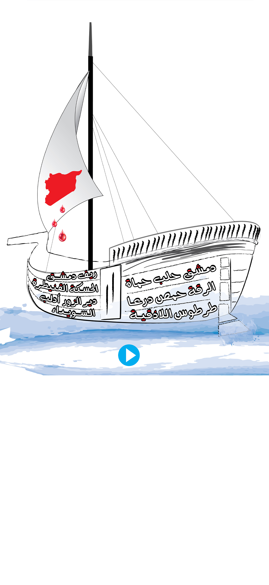

<audio id="heart1" src="safena.mp3" preload="auto"></audio>


<script>

  function safena() {
        var audio = document.getElementById("safena");

        if (audio.duration > 0 && !audio.paused) {
            audio.pause();
            audio.currentTime = 0;
        } else {
            audio.play();
        }
    }


  


</script>


<map name="image-map">
  
  
    <area target="_blank" alt="" title="" href="" onclick="javascript:safena(); return false;"coords="446,1408,636,1553" shape="rect">
  

  
</map>
